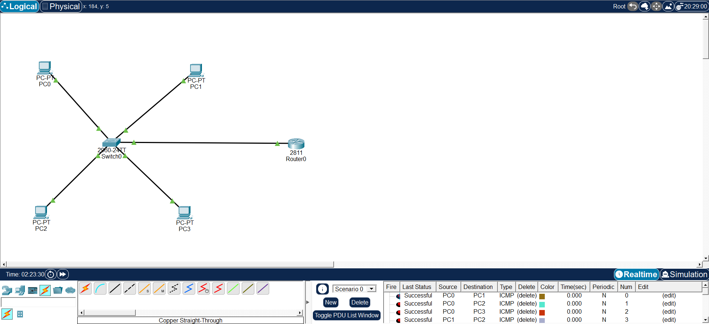
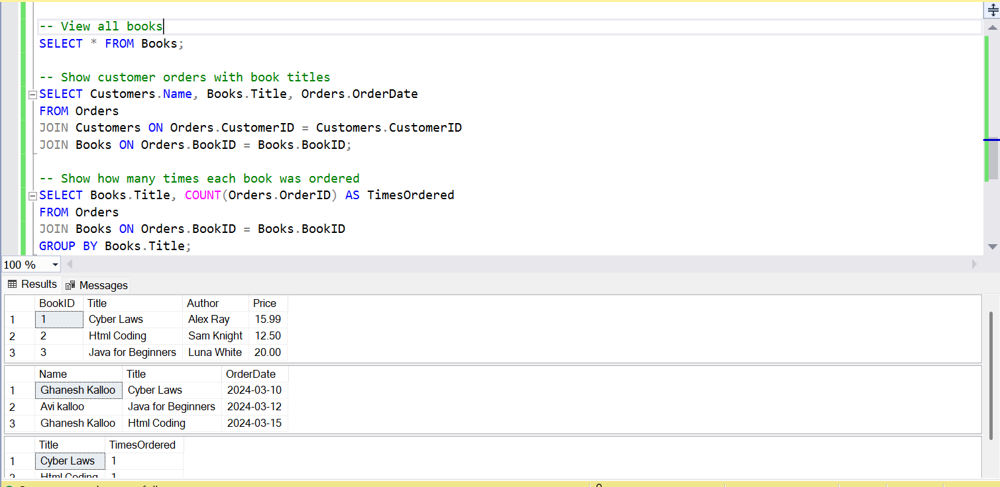

Ghanesh Singh Kalloo
Cybersecurity Student
☕ Coffee Website
This is a simple HTML coffee shop webpage created as part of my web development learning. It includes basic layout and visual elements using only HTML.
- 🛠 Technology: Pure HTML
- 📁 Live Preview:
View Coffee Website
- 📌 Designed as part of front-end practice
🌐 Basic Network Configuration – Cisco Packet Tracer
This project demonstrates a basic network topology with a router, switch, and multiple PCs. The devices are connected and configured with static IPs for connectivity testing in Cisco Packet Tracer.
- 🖼️ Preview:

- 📁 Download Project File:
Download .pkt
- 🧠 Tools Used: Cisco Packet Tracer
🖧 VLAN Configuration – Cisco Packet Tracer
This project demonstrates the configuration of two Virtual Local Area Networks (VLANs) using a Cisco 2960 switch and a Cisco 2811 router. The network is divided into two departments, HR and IT, each with its own IP subnet. Inter-VLAN routing was configured on the router to allow communication between the two VLANs.
- Department: HR (VLAN 10)
- PC0 – 192.168.1.10
- PC1 – 192.168.1.20
- Department: IT (VLAN 20)
- PC2 – 192.168.2.10
- PC3 – 192.168.2.20
- 🖼️ Preview:

- 📁 Download Project:
Download .pkt
- 🛠 Tools Used: Cisco Packet Tracer, Cisco 2960 Switch, Cisco 2811 Router
- ✔ Skills Demonstrated:
- Creating and naming VLANs
- Assigning switch ports to VLANs
- Static IP addressing
- Inter-VLAN routing (Router-on-a-Stick)
- Testing connectivity using ICMP (ping)
🌐 TCP/IP Configuration – Cisco Packet Tracer
This project demonstrates the configuration of a TCP/IP network using Cisco Packet Tracer. Two Local Area Networks (LANs) were connected through a Cisco 1941 router using Gigabit Ethernet interfaces. Each LAN contains a Cisco 2960 switch and two PCs configured with static IP addresses. The router acts as the default gateway for both networks, enabling communication between devices on different subnets.
- Network Devices: Cisco 1941 Router, 2 × Cisco 2960 Switches, 4 PCs
- Network 1 (192.168.1.0/24)
- Default Gateway: 192.168.1.1
- PC0 – 192.168.1.10
- PC1 – 192.168.1.20
- Network 2 (192.168.2.0/24)
- Default Gateway: 192.168.2.1
- PC2 – 192.168.2.10
- PC3 – 192.168.2.20
- 🖼️ Preview:

- 📁 Download Project:
Download .pkt
- 🛠 Tools Used: Cisco Packet Tracer, Cisco IOS CLI
- ✔ Skills Demonstrated:
- TCP/IP addressing
- Static IP configuration
- Router interface configuration
- Default gateway configuration
- LAN connectivity
📚 Book Database Project – SQL
This project sets up a simple book database using SQL. It includes table creation and sample data to demonstrate database operations.
- 🛠 Technology: SQL Server
- 📁 SQL File:
Download BookDatabase.sql
- 🖼️ Output Preview:

- 🔍 Features: Basic table creation, data insertion, and query